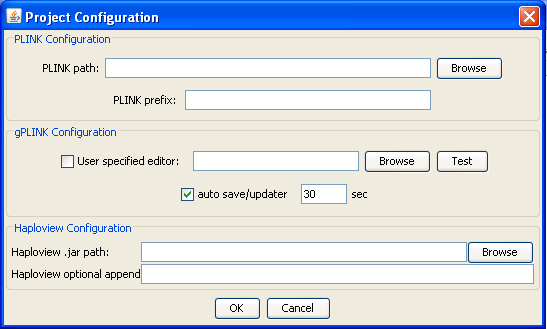

|  |
Configuring gPLINKThis dialog will appear only once, at the start of each new project (although you can change options later). The top two options tell gPLINK where the PLINK program resides (either locally or remotely, depending on whether you are running in local or remote mode). The PLINK prefix option is design to facilitate using PLINK with a cluster computing environment if it is available ( for example, prefacing all commands in bsub). If you are unfamiliar with the option and/or do not have access to a cluster, you can ignore this option. The other options on this panel are optional. You can tell gPLINK to also use an alternate viewer/editor (for example, emacs or Excel or any other program that accepts plain text files as input) by selecting the executable under User specified editor The "auto save/updater" option controls how frequently gPLINK will check the local/remote computer (depending on the local/remote nature of the project) for completed operations and regularly save the operation history. Turning this feature off is not recomended and remote projects with slow connections may wish to increase the timing to 60 second intervals. If you have downloaded Haploview, you can tell gPLINK where the Haploview JAR file is on your local machine. This will enable integration between gPLINK and Haploview for viewing files and data. The bottom option is an advanced optional feature, which allows you to pass extra command flags to Haplovew (for example, -memory 2000 to set the amount of memory Haploview has available).Previous | Next |